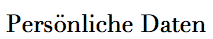

|
Karl-Speidel-Str. 5 |
Jasmin Wycislok, Germany, 88239 |
(07522) 1335 |

|  |
| Ich heiße Jasmin Wycislok. Wie ich zu dem Name gekommen bin? Ganz einfach.. Meine Eltern haben mir diesen Namen gegeben.
Ich bin am 19.11.1996 in Wangen geboren und bin nun 18 Jahre jung.Ich wohne in Wangen im Allgäu und das jetzt schon seit 18 Jahren. Wangen ist eine Altstadt die den jungen Leuten nichts bietet.Jedes mal frage ich mich wie meine Mama Wieslawa und mein Papa Adam nach Wangen ziehen konnten. Meine Mama als auch mein Papa kommen beide aus Polen. |
|
 |
| Ich war in Wangen auf der Grundschule. Und zwar war es die Praßbergschule.
Nach den 4 Jahren in der Grundschule blieb ich noch weitere 6 Jahre dort und machte dort meine Mittlere Reife, die ich erlfogreich absolviert habe.
Nach der 10. Klasse war ich auf der Gewerbliche Schule in Ravensburg und habe dort die 1-jährige Berufsfachschule Druck und Medientechnik gemacht. In diesem einen Jahr habe ich gelernt wie man mit Photoshop, InDesign und Illustrator arbeitet.
Nun mache ich eine Ausbildung zur Fachinformatikerin für Anwendungsentwicklung bei Nexiles GmbH die mir sehr viel Spaß macht. Näheres zu Nexiles GmbH finden sie auf der Seite ..Work. |
In der Schule haben wir an paar Kursen teilgenommen und so Zertifiezirungen bekommen. An 2 Kursen habe ich teil genommen:
- Tastatur Kurs
- Der Tastatur Kurs ging ein halbes Schuljahr und war immer einmal die Woche. Wir haben gelernt wie man mit dem 10 Fingersystem schreibt und hatten am Ende auch so etwas wie eine Prüfung um das Zertifikat dafür auch zu erhalten.
- Babysitter Kurs
- Der Babysitter Kurs ging 2 ganze Tage lang. In dem Kurs haben wir beigebracht bekommen, wie man mit Babys als auch Kinder in gewissen Situationen umgeht. Nach den 2 Tagen gab es auch hier eine Art Prüfung die wir machen mussten um das Zertifikat zu bekommen.
|
|
 |
In meiner Freizeit treffe ich mich sehr gerne mit Freunden.
Jedoch treibe ich auch gerne Sport. Ich mache Home Workout und tanze sehr viel. Ich hab auch 5 Jahre in einem Verein getanzt musste jedoch aufhören, da es wegen der Ausbildung zeitlich nicht mehr passt. Schaue dort aber ab und zu mal vorbei wenn ich die möglickeit dazu habe. Damit ihr auch wisst von welchem Tanz Verein ich spreche nenne ich den Namen: DANCEWORLD LA. Ich schätze deshalb höre ich hauptsächlich RnB und HipHop.
Tattoos finde ich auch sehr schön, ich selber habe auch zwei Tattoos. Das erste, das an meinem Nacken ist, habe ich zu meinem 17. Geburtstag bekommen und das zweite habe ich mir nach meinem 18. Geburtstag stechen lassen und dieses ist an meinem Rippen auf der linken Seite. Beide Tattoos sind Schriftzüge. |
|